This page is a guide to learning the piece Solitary Woman by Ralph Towner on a tapping Instrument such as the Chapman Stick or the acoustic Dragonfly DFA.
The piece is in primarily in D minor. The bass voice is mostly pedal-ing on D2/D3 octave notes.
